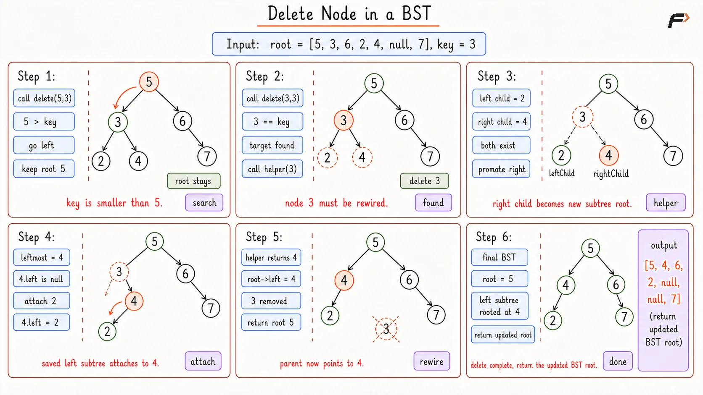
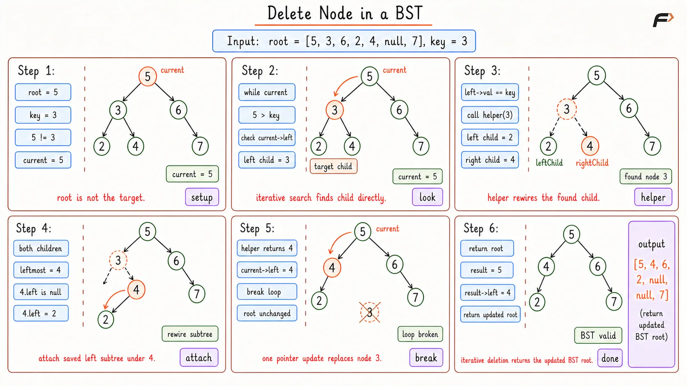

Delete Node in a BST
In the Delete Node in a BST problem, you are given the root node of a binary search tree and an integer key. Your task is to find the node that contains this exact key and remove it from the tree. After removing the node, you must ensure that the remaining nodes are reconnected in a way that perfectly maintains the binary search tree rules. Finally, return the root of the updated tree.
Example 1
Input: root = [5, 3, 6, 2, 4, null, 7], key = 3
Output: [5, 4, 6, 2, null, null, 7]
Explanation: We need to delete the node containing 3. Node 3 has two children: 2 and 4. We can remove 3 and replace its position with its right child (4). We then attach its left child (2) to the appropriate empty spot to maintain the sorted order.
Example 2
Input: root = [5, 3, 6, 2, 4, null, 7], key = 0
Output: [5, 3, 6, 2, 4, null, 7]
Explanation: We search the entire tree for the key 0. Since 0 does not exist anywhere in the tree, we do not make any changes and return the original tree exactly as it is.
Brute Force Approach
Think of a corporate organization chart where a manager is leaving the company. If the manager has no team, they simply leave. If they manage only one team, that entire team directly reports to the manager's boss. But if the departing manager has two distinct teams, it gets complicated. The simplest solution is to promote one team to take the manager's place, and then assign the other team to report to the most junior person of the promoted team.
In our tree, if the node to be deleted has two children, we will promote its right child to take its place. Then, we find the smallest value in that right child's branch (the leftmost spot) and attach the entire left child branch there. We can use recursion to travel down the tree to find the node, and a helper function to rewire the teams when we find it.
Algorithm
Check the base case: if the current node is empty, return empty.
If the current node value matches the key, pass this node to a helper function to perform the deletion and return the reconnected branches.
If the key is smaller than the current node value, make a recursive call to the left child and update the left pointer with the result to check for even smaller value.
If the key is larger than the current node value, make a recursive call to the right child and update the right pointer with the result.
In the helper function: handle the cases where the node has zero or one child by returning the non-empty child.
If the node has two children: find the leftmost node of the right child. Attach the left child to this leftmost node. Return the right child as the new replacement.
Dry Run

Delete a Node in BST Brute Dry Run
Solution
#include <bits/stdc++.h>
using namespace std;
// Definition for a binary tree node
struct TreeNode {
int val;
TreeNode *left;
TreeNode *right;
TreeNode(int x) : val(x), left(nullptr), right(nullptr) {}
};
class Solution {
private:
// Helper function to rewire the tree when the target node is found
TreeNode* helper(TreeNode* root) {
// If there is no left child, simply return the right child
if (root->left == nullptr) {
return root->right;
}
// If there is no right child, simply return the left child
if (root->right == nullptr) {
return root->left;
}
// Both children exist, so we promote the right child
TreeNode* rightChild = root->right;
// We also need to save the left child to reattach it later
TreeNode* leftChild = root->left;
// Find the absolute leftmost node in the promoted right branch
TreeNode* leftmostOfRight = rightChild;
while (leftmostOfRight->left != nullptr) {
leftmostOfRight = leftmostOfRight->left;
}
// Attach the saved left child to this empty leftmost spot
leftmostOfRight->left = leftChild;
// Return the newly promoted right child
return rightChild;
}
public:
// Main recursive function to locate the node before deleting
TreeNode* deleteNode(TreeNode* root, int key) {
// Base case: if we hit a dead end, the key is not in the tree
if (root == nullptr) {
return nullptr;
}
// If we found the exact node, rewire it using the helper
if (root->val == key) {
return helper(root);
}
// If the key is smaller, continue searching down the left path
if (root->val > key) {
root->left = deleteNode(root->left, key);
}
// If the key is larger, continue searching down the right path
else {
root->right = deleteNode(root->right, key);
}
// Return the current node to keep the rest of the tree intact
return root;
}
};
// Helper function to print in-order traversal of the tree
void printInOrder(TreeNode* node) {
if (node == nullptr) return;
printInOrder(node->left);
cout << node->val << " ";
printInOrder(node->right);
}
// Driver code starts here
int main() {
// Construct the sample tree
TreeNode* root = new TreeNode(5);
root->left = new TreeNode(3);
root->right = new TreeNode(6);
root->left->left = new TreeNode(2);
root->left->right = new TreeNode(4);
root->right->right = new TreeNode(7);
// Instantiate the solution object
Solution obj;
int key = 3;
// Perform the recursive deletion
TreeNode* result = obj.deleteNode(root, key);
// Output the entire tree via in-order traversal
cout << "In-order traversal: ";
printInOrder(result);
cout << endl;
return 0;
}Complexity Analysis
Time Complexity: O(H), where H is the height of the tree. In the worst case, we travel from the root down to the deepest leaf to find the node, and then travel down again to find the leftmost child in the helper function.
Space Complexity: O(H), because the recursive function calls stack up in the system memory. In a deeply unbalanced tree, this matches the height of the tree.
Optimal Approach
The recursive method works perfectly but comes with hidden memory costs due to the call stack. If the tree is extremely deep and looks like a straight line, recursion might trigger a memory crash. We can easily optimize this by replacing the recursion with a single pointer that physically travels down the tree. If you want to understand this in detail, check our guide on Binary Search Trees.
Instead of sending a chain of messengers down the corporate ladder to fire someone, you personally walk down the hallway. At each intersection, you read the door numbers to find the exact person. Once you find them, you manually unplug their phone line and plug it into their successor's office before walking away. You do not leave any extra memory trails behind.
Algorithm
Check the base case: if the tree is empty, return empty nothing to check.
If the very first root node is the key, use the helper function to rewire it and instantly return the new root.
Set a pointer to track your current location starting at the root.
Start a loop that runs while the current node is not empty.
Check if the target key is located in the left child. If yes, apply the helper function to the left child, update the left pointer, and break the loop. If not, step down into the left child.
Alternatively, check if the target key is located in the right child. If yes, apply the helper function to the right child, update the right pointer, and break the loop. If not, step down into the right child.
Return the original root node.
Dry Run

Delete a Node in BST Optimal Dry Run
Solution
#include <bits/stdc++.h>
using namespace std;
// Definition for a binary tree node
struct TreeNode {
int val;
TreeNode *left;
TreeNode *right;
TreeNode(int x) : val(x), left(nullptr), right(nullptr) {}
};
class Solution {
private:
// Helper function to rewire the tree when the target node is found
TreeNode* helper(TreeNode* root) {
// If there is no left child, simply return the right child
if (root->left == nullptr) {
return root->right;
}
// If there is no right child, simply return the left child
if (root->right == nullptr) {
return root->left;
}
// Both children exist, so we promote the right child
TreeNode* rightChild = root->right;
// We also need to save the left child to reattach it later
TreeNode* leftChild = root->left;
// Find the absolute leftmost node in the promoted right branch
TreeNode* leftmostOfRight = rightChild;
while (leftmostOfRight->left != nullptr) {
leftmostOfRight = leftmostOfRight->left;
}
// Attach the saved left child to this empty leftmost spot
leftmostOfRight->left = leftChild;
// Return the newly promoted right child
return rightChild;
}
public:
// Iterative function to travel down the tree using constant memory
TreeNode* deleteNode(TreeNode* root, int key) {
// Immediately return if the tree is completely empty
if (root == nullptr) {
return nullptr;
}
// If the root itself is the target, replace the entire tree
if (root->val == key) {
return helper(root);
}
// Pointer to keep track of our current walking position
TreeNode* current = root;
// Keep walking down the tree until we hit a dead end
while (current != nullptr) {
// Target is smaller, so it must be on the left side
if (current->val > key) {
// If the immediate left child is the target, replace it
if (current->left != nullptr && current->left->val == key) {
current->left = helper(current->left);
break;
} else {
// Otherwise, take a step down to the left
current = current->left;
}
}
// Target is larger, so it must be on the right side
else {
// If the immediate right child is the target, replace it
if (current->right != nullptr && current->right->val == key) {
current->right = helper(current->right);
break;
} else {
// Otherwise, take a step down to the right
current = current->right;
}
}
}
// Return the root of the modified tree
return root;
}
};
// Helper function to print in-order traversal of the tree
void printInOrder(TreeNode* node) {
if (node == nullptr) return;
printInOrder(node->left);
cout << node->val << " ";
printInOrder(node->right);
}
// Driver code starts here
int main() {
// Construct the sample tree
TreeNode* root = new TreeNode(5);
root->left = new TreeNode(3);
root->right = new TreeNode(6);
root->left->left = new TreeNode(2);
root->left->right = new TreeNode(4);
root->right->right = new TreeNode(7);
// Instantiate the solution object
Solution obj;
int key = 3;
// Perform the optimized iterative deletion
TreeNode* result = obj.deleteNode(root, key);
// Output the entire tree via in-order traversal
cout << "In-order traversal: ";
printInOrder(result);
cout << endl;
return 0;
}Complexity Analysis
Time Complexity: O(H), where H is the height of the tree. The single pointer moves strictly downwards without duplicating any steps.
Space Complexity: O(1), because we use primitive pointer variables instead of the system call stack, keeping memory usage strictly minimal.
Interview follow-up Questions
If the very first node is the target, we simply pass it to our helper function. The helper function performs the branch promotions as usual, and returns the newly appointed top node. We then return this new node, which officially becomes the new root of the tree.